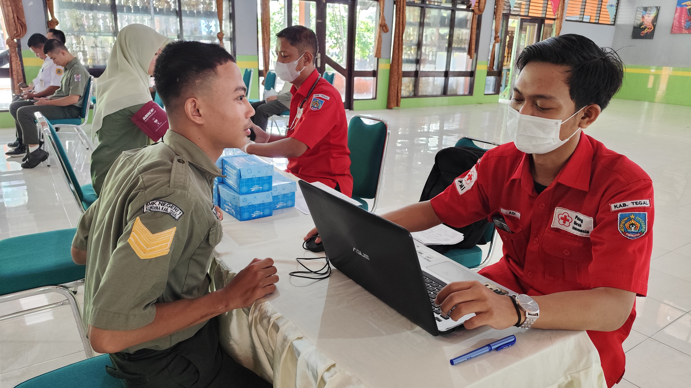
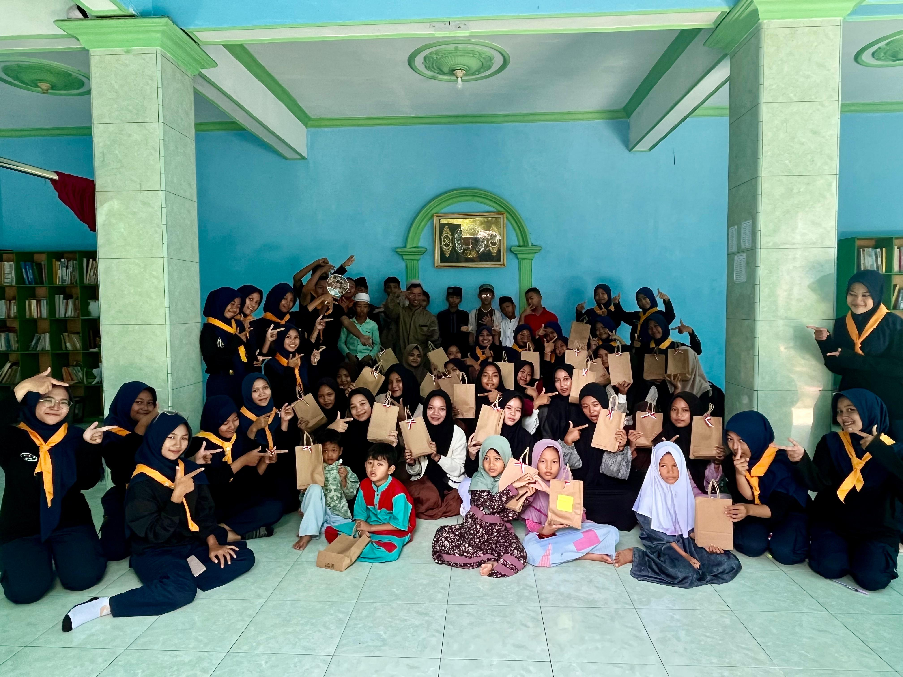
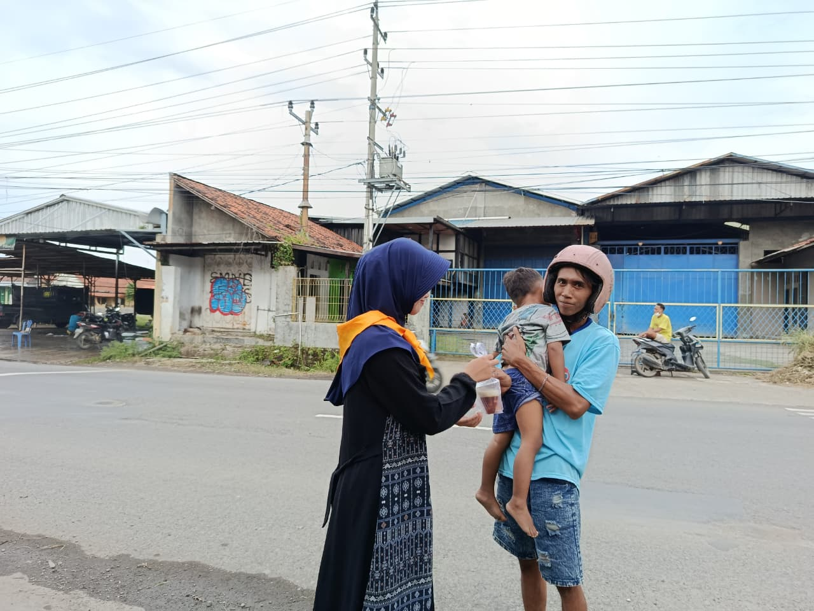

KEMANUSIAAN
Kegiatan Sosial PMR Wira
Dipublikasikan oleh Pengurus PMR SMKN 1 Adiwerna
Kegiatan sosial merupakan salah satu pilar penting dalam pembinaan anggota Palang Merah Remaja (PMR) SMK Negeri 1 Adiwerna. Melalui kegiatan ini, para siswa dilatih untuk memiliki kepekaan sosial, rasa empati yang tinggi terhadap sesama, serta siap turun tangan membantu masyarakat yang membutuhkan di lingkungan sekolah maupun luar sekolah.
Beberapa agenda rutin dalam kegiatan sosial meliputi bakti sosial, donor darah sukarela, hingga kunjungan kasih ke panti asuhan terdekat.
Dokumentasi Foto


